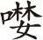

，驱走貌，相随貌。温庭筠《拂舞词》：“神椎凿石塞神潭，白马
亦尘起。”《玉篇》：“
：驱步。”
，驱走貌，相随貌。温庭筠《拂舞词》：“神椎凿石塞神潭，白马
亦尘起。”《玉篇》：“
：驱步。”【赵皮鞋】 （司户官上 [1] ） 出身原在国儿监，趁食求官口带馋 [2] 。蛇羹蚌酱饱腌臜，海外的 官箴过得碱 [3] 。
小子崖州司户，真当海外天子。长梦做个高官，忽然半夜起水 [4] 。好笑，好笑。一个司户官儿，怎能巴到尚书阁老地位？不想天吊下一个卢尚书来此安置。长说他与朝廷相知，还有钦取之日，小子因此再也不难为他。谁想上头没有他的路，昨日接了当朝宇文丞相密旨，说他最恨的是卢尚书，叫我结果了他的性命，许我钦取还朝，不次重用。思想起来，八品官做下这场方便事，讨了钦取，有甚不好？今早缺官署印 [5] ，卢生可来参见也。
【步蟾宫】 （生上） 吃尽了南州青橄榄，似忠臣苦带余甘。三年憔悴甚江潭，有 百十倍的 带围清减 [6] 。
俺卢生有罪流配此州。州无正官，便是司户官儿署掌，也不免过去见他。（见介）司户先生拜揖，请了。（丑恼介）呀，你是何人？（生）长在此相见的卢生。（丑）你不说是卢生罢，卢生流配之人，目今掌印，便是你收管衙门，不应得你叩头站立伺候？叫我一声司户，就请了去。好打，好打。（生）谁敢？（丑）便叫牢子打哩。（众拖生打介）（生）有何罪过呵？（丑）还不知罪。
【红衲袄】 打你个 老头皮不向我 门下参，打你个 硬骹儿不向我 庭下跕 [7] ，打你个 蠢流民尽着𠼖 [8] ，打你个 暗通番该万斩。（生）宇文公可恨，可恨！（丑）宇文相公甚么样好人，你也骂他？ 打你个 骂当朝一古子的 谈 [9] 。（生）不要哩，朝廷有用我之时。（丑） 打你个 仗当今一块子的 胆。（生笑介）（丑） 打的你 皮开肉绽还气岩岩也 [10] 。打了呵，还待 火烙你头皮 铁寸嵌。
【前腔】 （生） 我分的 大朝家辩谄谗，怎到你 小官司行对勘 [11] ？则道住的是 狗排栏身自躭，谁想过了 鬼门关刑较惨？罢了，罢了，既在矮檐下，怎敢不低头？ 扑着口三千段 朝家事一谜的 缄 [12] ，抢着头十二分 你本官前 再不敢。你打的我 血淋侵达喇的 痛镵镵也 [13] ，怎再领得起你那 十指钻钳泼火燂 [14] ？（铁钤生头，火烙生足介）（使臣带将官捧朝服上）
【缕缕金】 将雨露，洒烟岚。皇宣催请急，旧新参。一点三台路，海风吹暗。堂堂天使此停骖，过来的 鬼门站。
（内上报介）天使到来，钦取宰相回朝。（丑惊喜介）我的宇文老爷，小官还不曾替你干的事，就蒙你钦取我拜相回朝。领戴，领戴。且把老头儿监候。（作接使臣不跪，使问介）是甚么官儿？不跪？（丑）天使来取司户回朝拜相，体面不跪。（使）咄！快起去。卢老爷那里？（丑慌取生出介）（使）卢老先生憔悴至此！有钦赐朝服。（生更衣，户慌介）（使读诏介）皇帝诏曰：咨尔前征西节度使兵部尚书卢生，以朕一时不明，陷汝三年边障。宇文融今已伏诛，赐汝定西侯爵邑如故，钦取还朝，尊为上相。兼掌兵权，马头所到先斩后奏。钦哉！谢恩。（使见介）敢问老先生到此多年了？
【红芍药】 （生） 有三年不到朝参，云阳市别了妻男。侥幸煞 天恩免囚，日南珠满泪盘沾糁，受尽热和咸。才记起风清河淡。（合） 喜重归相府潭潭，有的这青天湛湛。
（丑自绑上，请罪介）那里知朝廷真有用他之时？宇文公，宇文公，弄得我没上没下的，只得前去请死。（见介）司户小人有眼不识太山，绑缚阶前，合当万死。（生笑介）起来，此亦世情之常耳。
【红衫儿】 是则是世间 人都扯淡，有的闲窥瞰。也 着些儿肚子包含，都不计较你了 。自 羞惭，把你那 絮叨叨口业都除忏 [15] 。（丑）老爷纵饶狗命，狗心不稳，颠倒号令 [16] ，施行了罢。（生笑介）疑惑我后来么？ 大人家说过了 无欺蘸，头直 上青天监。
（丑叩头介）天大肚子的老爷，叩头，千岁千千岁！（生）君命召，就此起行了。（黑鬼三人上）黑鬼们来送老爷。（生）劳苦你三年了。
【会河阳】 地折底 走过，琼、厓、万、儋。谢你 鬼门关口来相探。（丑）地方要起老爷生祠 [17] ，千年万载。（生）要立生祠，立在他狗排栏之上。 生 受，他留我住站。我 魂梦 游海南，把名字他 碉房嵌 [18] 。司户，我去后好看觑黑鬼， 要他黑 爷儿，稳着那 樵歌担；疍 夫妻 [19] ，稳着那 鱼船缆。
我去也。（行介）
【红绣鞋】 皇宣一纸鸾缄，鸾缄 [20] 。车尘马足 [21] ， 。笑奸贪，枉愚滥。把时情憾，皇恩感。乌头蘸，旧朝簪。
【尾声】 谗痕妒迹无沾嵌，向 凤凰池洗净征衫 [22] 。今后呵， 海外山川长则是画屏风 边际览。
海外流人去，朝中宰相归。
举头红日近，回首白云低
[23]
。
[1] 司户：官名，《旧唐书》卷四四《志》第二四“职官三”：“户曹司户籍、计账、道路、遥旅、婚田之事。”
[2] 趁食：谋生、吃饭。宋周密《癸辛杂识续集上·湖翻》：“农人皆相与结队往淮南趁食。”趁，就的意思。《元典章》：“将带老小，流移趁食。”
[3] “蛇羹”二句：用蛇羹蚌酱等来果腹。官箴，官场生活、规则。明沈鲸《双珠记·弃官寻父》：“制行难期画虎成，事亲肯被官箴缚，尽孝何愁世纲婴。”碱，卤的结晶，次等盐。《六书故》：“刮碱剪炼，其味最下。”这里指生活的艰苦。
[4] 起水：发迹、发财。粤西一带的俗语。
[5] 署印：代理官职。旧时官印最重要，同于官位，故名。明沈德符《万历野获编·吏部二·言官例转反诘》：“首揆怒其异己，遂改命侍郎杨时乔署印。”
[6] 带围清减：指身体的消瘦。
[7] 骹（qiāo）：胫骨近脚处较细的部分，亦指脚：“坐石浸两骹，炎肤起芒粟。”跕（dié）：下坠的样子。《后汉书·马援传》：“下潦上雾，毒气重蒸，仰视飞鸢跕跕堕水中。”
[8]  ：贪婪。
[9] 一古子：一起、一堆。
[10] 气岩岩：生气的样子。
[11] 对勘：对质、审问、对证。《聊斋志异·席方平》：“当堂对勘，席所言皆不妄。”
[12] 扑着口三千段朝家事一谜的缄：不说和朝政有关的事情。扑着口，闭着嘴。一迷的缄，一味地沉默。
[13] 达喇：语助词。指喊叫声。痛镵（chán）镵：刺痛。镵，刺、凿。唐韩愈《送区弘南归》诗：“汹汹洞庭莽翠微，九嶷镵天荒是非。”
[14] 十指钻钳泼火燂：古代的一种刑具。十指被铁钳夹、用火烤。燂（qián），烤热、烧烂。《礼·内则》：“五日则燂汤请浴。”《说文》：“燂，火热也。”
[15] 口业：佛教以身、口、意为三业。口业指妄言、恶口、两舌和绮语。业，同“孽”。《净住子》：“口业是患苦之门，祸累之始。”
[16] 颠倒：倒不如，索性。《清平山堂话本·快嘴李翠莲记》云：“叫你出来，分付你小则声，颠倒说出一篇来。”
[17] 生祠：为活人建立的祠堂。《旧唐书·列传》第三十九“狄仁杰”：“仁杰尝为魏州刺史，人吏为立生祠。”
[19] 疍（dàn）夫妻：即疍民夫妻、船家夫妻。疍民，过去在中国广东、广西、福建一带的水上居民，历史上长期受统治阶级的压迫和歧视，世代从事渔业或水上运输业，以船为家。清屈大均《广东新语》第十八《人语》：“诸疍以艇为家，是曰疍泉。”
[20] 鸾缄：诏书。
[21]
（cāntán）：亦作
，驱走貌，相随貌。温庭筠《拂舞词》：“神椎凿石塞神潭，白马
亦尘起。”《玉篇》：“
：驱步。”
[22] 凤凰池：亦称凤池。禁苑中池沼。魏晋南北朝设中书省于禁苑，掌管机要，接近皇帝。故称中书省为凤凰池。唐朝的凤凰池一般是指宰相。唐刘禹锡《湖南观察使故相国袁公挽歌》：“五驱龙虎节，一入凤凰池。”
[23] “举头”二句：宋寇准的诗歌：“举头红日近，回首白云低。”明彭大翼《山堂肆考》卷一百零八《神童·吟华山诗》云：“宋寇准，字平仲，八岁吟《华山诗》：‘只有天在上，更无山与齐。举头红日近，回首白云低。’”其师谓父曰：“贤郎怎不作宰相？”
《召还》前半部分写崖州司户受宇文融指使，将卢生折磨拷打，欲结果其性命。后半出戏写朝廷将卢生从崖州召回，重新赐封为定西侯，尊为上相，兼掌兵权，具有先斩后奏的权力。情节大起大落，富有戏剧性。
戏中的崖州司户是一个典型的趋炎附势的小人。他本以为卢生“与朝廷相知，有钦取之日”，所以“再也不难为他”，后来，收到宇文融致卢生于死地的密旨，便开始为虎作伥，曲子【红衲袄】一连用八句“打你个……”，来显示了他凶残的本性。当朝廷命“钦取宰相回朝”时，他还没有从虐待卢生的快意中清醒过来，以为“天使来取司户回朝拜相，体面不跪”呢。最后自绑着向卢生请罪，卢生赦免他后，还害怕卢生秋后算账，一副典型的反复无常的小人嘴脸，极具讽刺意味。卢生面对司户的前倨后恭，一句“此亦世情之常耳”，含有四两拨千斤之用，将当时明代社会上趋炎附势、卖友求荣、小人得志等丑恶现象，展示得淋漓尽致。
与司户形成鲜明对比的是那些“黑鬼”们，虽然没有具体写他们对卢生的帮助，但是卢生一句“劳苦你三年了”及后面对司户的吩咐“我去后好看觑黑鬼”，足见普通百姓的善良与可爱。